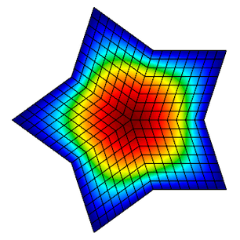
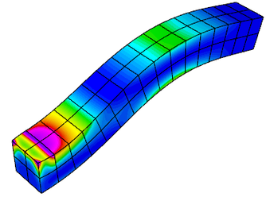
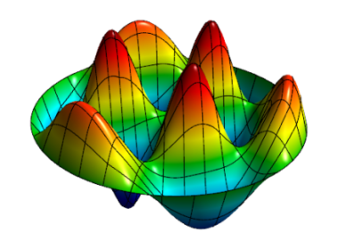
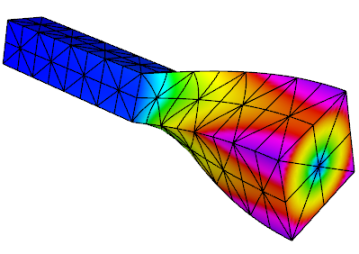
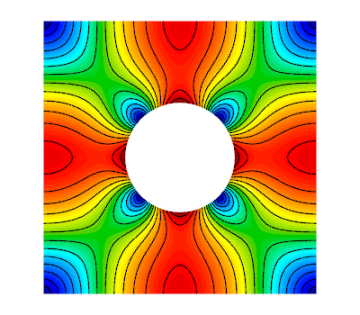

Example Codes and Miniapps
This page provides a brief overview of MFEM's example codes and miniapps. For
detailed documentation of the MFEM sources, including the examples, see the
online Doxygen documentation,
or the doc directory in the distribution.
The goal of the example codes is to provide a step-by-step introduction to MFEM in simple model settings. The miniapps are more complex, and are intended to be more representative of the advanced usage of the library in physics/application codes. We recommend that new users start with the example codes before moving to the miniapps.
Clicking on any of the categories below displays examples and miniapps that contain the described feature. All examples support (arbitrarily) high-order meshes and finite element spaces. The numerical results from the example codes can be visualized using the GLVis visualization tool (based on MFEM). See the GLVis website for more details.
Users are encouraged to submit any example codes and miniapps that they have created and
would like to share.
Contact a member of the MFEM team to report
bugs
or post questions or comments.
Application (PDE)
Finite Elements
Discretization
Solver
Example 1: Laplace Problem

This example code demonstrates the use of MFEM to define a simple isoparametric finite element discretization of the Laplace problem
The example highlights the use of mesh refinement, finite element grid functions, as well as linear and bilinear forms corresponding to the left-hand side and right-hand side of the discrete linear system. We also cover the explicit elimination of essential boundary conditions, static condensation, and the optional connection to the GLVis tool for visualization.
The example has a serial (ex1.cpp) and a parallel (ex1p.cpp) version.
Example 2: Linear Elasticity

This example code solves a simple linear elasticity problem describing a multi-material cantilever beam. Specifically, we approximate the weak form of

The example demonstrates the use of high-order and NURBS vector finite element spaces with the linear elasticity bilinear form, meshes with curved elements, and the definition of piece-wise constant and vector coefficient objects. Static condensation is also illustrated.
The example has a serial (ex2.cpp) and a parallel (ex2p.cpp) version. We recommend viewing Example 1 before viewing this example.
Example 3: Definite Maxwell Problem

This example code solves a simple 3D electromagnetic diffusion problem corresponding to the second order definite Maxwell equation
The example demonstrates the use of finite element spaces with the curl-curl and the (vector finite element) mass bilinear form, as well as the computation of discretization error when the exact solution is known. Static condensation is also illustrated.
The example has a serial (ex3.cpp) and a parallel (ex3p.cpp) version. We recommend viewing examples 1-2 before viewing this example.
Example 4: Grad-div Problem

This example code solves a simple 2D/3D diffusion problem corresponding to the second order definite equation
The example demonstrates the use of finite element spaces with the grad-div and vector finite element mass bilinear form, as well as the computation of discretization error when the exact solution is known. Bilinear form hybridization and static condensation are also illustrated.
The example has a serial (ex4.cpp) and a parallel (ex4p.cpp) version. We recommend viewing examples 1-3 before viewing this example.
Example 5: Darcy Problem

This example code solves a simple 2D/3D mixed Darcy problem corresponding to the saddle point system
The example demonstrates the use of the BlockMatrix and BlockOperator classes, as well as the collective saving of several grid functions in a VisIt visualization format.
The example has a serial (ex5.cpp) and a parallel (ex5p.cpp) version. We recommend viewing examples 1-4 before viewing this example.
Example 6: Laplace Problem with AMR

This is a version of Example 1 with a simple adaptive mesh refinement loop. The problem being solved is again the Laplace equation
The example demonstrates MFEM's capability to work with both conforming and nonconforming refinements, in 2D and 3D, on linear, curved and surface meshes. Interpolation of functions from coarse to fine meshes, as well as persistent GLVis visualization are also illustrated.
The example has a serial (ex6.cpp) and a parallel (ex6p.cpp) version. We recommend viewing Example 1 before viewing this example.
Example 7: Surface Meshes

This example code demonstrates the use of MFEM to define a triangulation of a unit sphere and a simple isoparametric finite element discretization of the Laplace problem with mass term,
The example highlights mesh generation, the use of mesh refinement, high-order meshes and finite elements, as well as surface-based linear and bilinear forms corresponding to the left-hand side and right-hand side of the discrete linear system. Simple local mesh refinement is also demonstrated.
The example has a serial (ex7.cpp) and a parallel (ex7p.cpp) version. We recommend viewing Example 1 before viewing this example.
Example 8: DPG for the Laplace Problem

This example code demonstrates the use of the Discontinuous Petrov-Galerkin (DPG) method in its primal 2x2 block form as a simple finite element discretization of the Laplace problem
The example highlights the use of interfacial (trace) finite elements and spaces, trace face integrators and the definition of block operators and preconditioners.
The example has a serial (ex8.cpp) and a parallel (ex8p.cpp) version. We recommend viewing examples 1-5 before viewing this example.
Example 9: DG Advection

This example code solves the time-dependent advection equation
The example demonstrates the use of Discontinuous Galerkin (DG) bilinear forms in MFEM (face integrators), the use of explicit ODE time integrators, the definition of periodic boundary conditions through periodic meshes, as well as the use of GLVis for persistent visualization of a time-evolving solution. The saving of time-dependent data files for external visualization with VisIt is also illustrated.
The example has a serial (ex9.cpp) and a parallel (ex9p.cpp) version.
Example 10: Nonlinear Elasticity

This example solves a time dependent nonlinear elasticity problem of the form

The example demonstrates the use of nonlinear operators, as well as their implicit time integration using a Newton method for solving an associated reduced backward-Euler type nonlinear equation. Each Newton step requires the inversion of a Jacobian matrix, which is done through a (preconditioned) inner solver.
The example has a serial (ex10.cpp) and a parallel (ex10p.cpp) version. We recommend viewing examples 2 and 9 before viewing this example.
Example 11: Laplace Eigenproblem

This example code demonstrates the use of MFEM to solve the eigenvalue problem
We compute a number of the lowest eigenmodes by discretizing the Laplacian and Mass operators using a finite element space of the specified order, or an isoparametric/isogeometric space if order < 1 (quadratic for quadratic curvilinear mesh, NURBS for NURBS mesh, etc.)
The example highlights the use of the LOBPCG eigenvalue solver together with the BoomerAMG preconditioner in HYPRE. Reusing a single GLVis visualization window for multiple eigenfunctions is also illustrated.
The example has only a parallel (ex11p.cpp) version. We recommend viewing Example 1 before viewing this example.
Example 12: Linear Elasticity Eigenproblem

This example code demonstrates the use of MFEM to solve the eigenvalue problem
We compute a number of the lowest eigenmodes by discretizing the Laplacian and Mass operators using a finite element space of the specified order, or an isoparametric/isogeometric space if order < 1 (quadratic for quadratic curvilinear mesh, NURBS for NURBS mesh, etc.)
This example code solves the linear elasticity eigenvalue problem for a multi-material cantilever beam. Specifically, we compute a number of the lowest eigenmodes by approximating the weak form of

The example highlights the use of the LOBPCG eigenvalue solver together with the BoomerAMG preconditioner in HYPRE. Reusing a single GLVis visualization window for multiple eigenfunctions is also illustrated.
The example has only a parallel (ex12p.cpp) version. We recommend viewing examples 2 and 11 before viewing this example.
Example 13: Maxwell Eigenproblem

This example code solves the Maxwell (electromagnetic) eigenvalue problem
We compute a number of the lowest nonzero eigenmodes by discretizing the curl curl operator using a Nedelec finite element space of the specified order in 2D or 3D.
The example highlights the use of the AME subspace eigenvalue solver from HYPRE, which uses LOBPCG and AMS internally. Reusing a single GLVis visualization window for multiple eigenfunctions is also illustrated.
The example has only a parallel (ex13p.cpp) version. We recommend viewing examples 3 and 11 before viewing this example.
Example 14: DG Diffusion

This example code demonstrates the use of MFEM to define a discontinuous Galerkin (DG) finite element discretization of the Laplace problem
The example has a serial (ex14.cpp) and a parallel (ex14p.cpp) version. We recommend viewing examples 1 and 9 before viewing this example.
Volta Miniapp: Electrostatics
This miniapp demonstrates the use of MFEM to solve realistic problems in the field of linear electrostatics. Its features include:
- dielectric materials
- charge densities
- surface charge densities
- prescribed voltages
- applied polarizations
- high order meshes
- high order basis functions
- adaptive mesh refinement
- advanced visualization
For more details, please see the documentation in the
miniapps/electromagnetics directory.
The miniapp has only a parallel (volta.cpp) version. We recommend that new users start with the example codes before moving to the miniapps.
Tesla Miniapp: Magnetostatics

This miniapp showcases many of MFEM's features while solving a variety of realistic magnetostatics problems. Its features include:
- diamagnetic and/or paramagnetic materials
- ferromagnetic materials
- volumetric current densities
- surface current densities
- external fields
- high order meshes
- high order basis functions
- adaptive mesh refinement
- advanced visualization
For more details, please see the documentation in the
miniapps/electromagnetics directory.
The miniapp has only a parallel (tesla.cpp) version. We recommend that new users start with the example codes before moving to the miniapps.
Mobius Strip Miniapp

This miniapp generates various Mobius strip-like surface meshes. It is a good way to generate complex surface meshes.
Manipulating the mesh topology and performing mesh transformation are demonstrated.
The mobius-strip mesh in the data directory was generated with this miniapp.
For more details, please see the documentation in the
miniapps/meshing directory.
The miniapp has only a serial (mobius-strip.cpp) version. We recommend that new users start with the example codes before moving to the miniapps.
Klein Bottle Miniapp

This miniapp generates three types of Klein bottle surfaces. It is similar to the mobius-strip miniapp.
Manipulating the mesh topology and performing mesh transformation are demonstrated.
The klein-bottle and klein-donut meshes in the data directory was generated with this miniapp.
For more details, please see the documentation in the
miniapps/meshing directory.
The miniapp has only a serial (klein-bottle.cpp) version. We recommend that new users start with the example codes before moving to the miniapps.
Mesh Explorer Miniapp

This miniapp is a handy tool to examine, visualize and manipulate a given mesh. Some of its features are:
- visualizing of mesh materials and individual mesh elements
- mesh scaling, randomization, and general transformation
- manipulation of the mesh curvature
- the ability to simulate parallel partitioning
- quantitative and visual reports of mesh quality
For more details, please see the documentation in the
miniapps/meshing directory.
The miniapp has only a serial (mesh-explorer.cpp) version. We recommend that new users start with the example codes before moving to the miniapps.